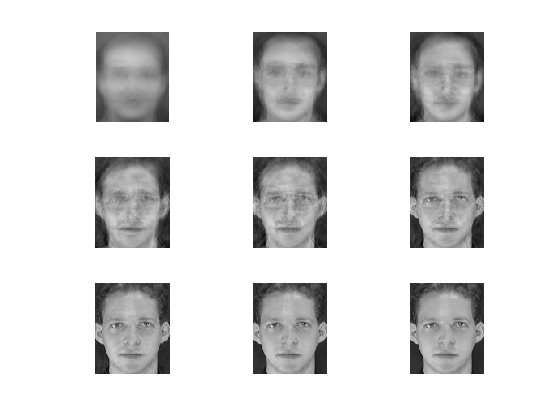
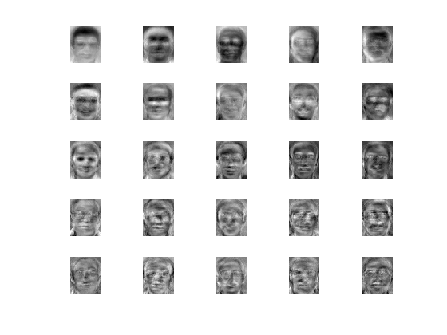
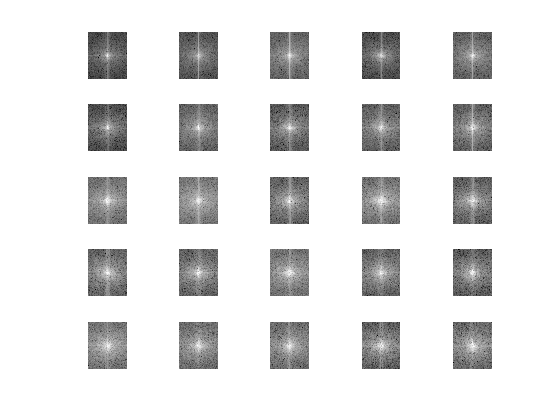

Q3 : Reconstruction of the first face s1/1.pgm the ORL face database
clear all
close all
X_original=zeros(10304,175);
Xmean=zeros(10304,1);
for i=1:35
a=strcat('s',num2str(i));
a=strcat(a,'/');
for j=1:5
b=strcat(a,num2str(j));
b=strcat(b,'.pgm');
y=imread(b);
y=double(y);
X_original(:,(5*(i-1)+j))=y(:);
c=y(:);
Xmean=Xmean+c;
end
end
Xmean = Xmean/175;
Xmeanmatrix = repmat(Xmean,1,175);
X_meansubtracted = X_original - Xmeanmatrix;
L = X_meansubtracted.' * X_meansubtracted;
k_values = [2; 10; 20; 50; 75; 100; 125; 150; 175];
figure;
for index=1:9
k=k_values(index);
[V_intermediate,D]=eigs(L,k);
V = X_meansubtracted * V_intermediate;
V = normc(V);
alpha = V.' * X_meansubtracted(:,1);
out = V*alpha;
out = out + Xmean;
out = reshape(out,112,92);
out=uint8(out);
subplot(3,3,index);
imshow(out);
end
[V_intermediate,D]=eigs(L,25);
V = X_meansubtracted * V_intermediate;
figure;
for i=1:25
subplot(5,5,i);
imshow(reshape(mat2gray(V(:,i)),112,92));
end
figure;
for i=1:25
subplot(5,5,i);
U=fft2(reshape((V(:,i)),112,92));
U=fftshift(U);
U=abs(U);
U=log(1+U);
U=mat2gray(U);
imshow(U);
end
Warning: For real symmetric problems, must have number of eigenvalues k < n.
Using eig instead.
  